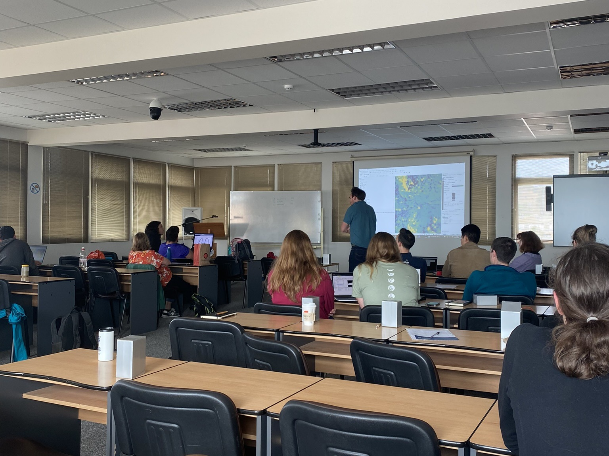
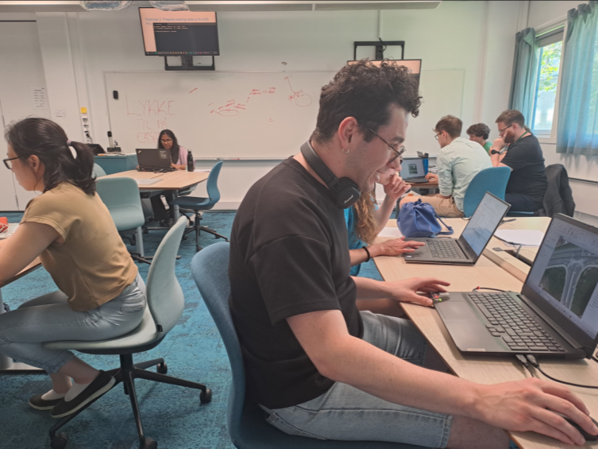
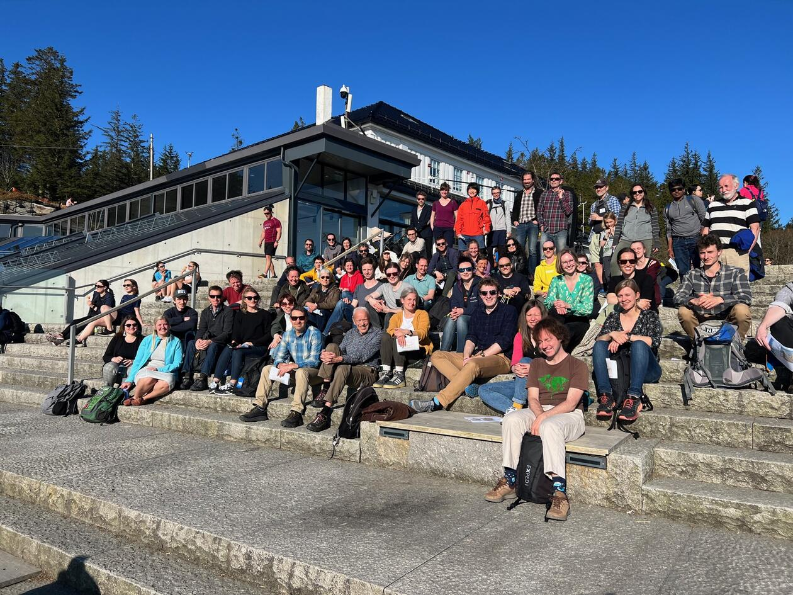
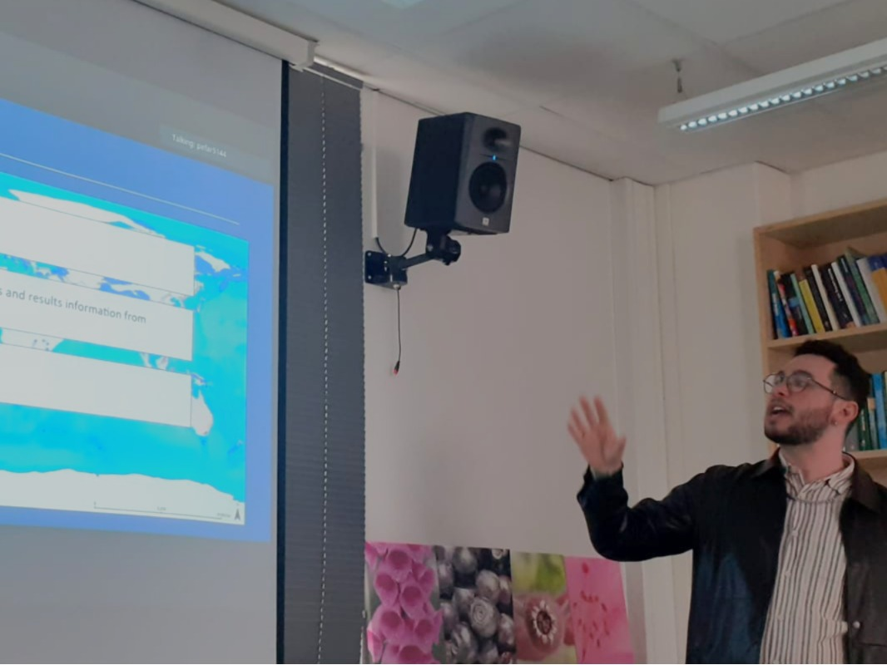
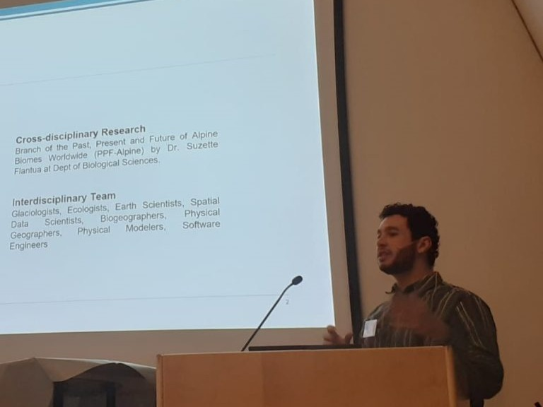

Grants
Student4Student Summerschool
Date: 2025.04.07
This grant provided me with a registration waiver worth of €450, allowing me to participate in the Summer School and share my work with an international audience. These opportunities have been invaluable in furthering my research and connecting with the global scientific community.
European Geosciences Union 2025 (EGU25) General Assembly
Date: 2025.03.05
This grant provided me with a registration waiver worth €525, along with an additional €500 in support to attend the EGU25 conference. I was also honored to be awarded an oral presentation spot, where I present the GLACIMONTIS geodatabase on mountain glacier extents of the Last Glacial Maximum (LGM).
Internationl Conferences
International Mountain Conference 2025 (IMC25)
Date: 2025.11.14
The advancements achieved by the GLACIMONTIS will further discussed in the IMC25, under the session FS 3.150: Methodological advances in mountain research. As the first author and presenter, I will continue to share our team’s work on a new open-access global geodatabase of mountain glacier extents spanning the period 57-14 kyr BP and will present the next advancements on our project.
European Geosciences Union 2025 (EGU25) General Assembly
Date: 2025.04.29
I had the honor of delivering an abstract titled “Global geodatabase of mountain glacier extents at the Last Glacial Maximum” at the upcoming EGU25 General Assembly. As the first author and presenter, I will have the opportunity to share our team’s work on a new open-access global geodatabase of mountain glacier extents spanning the period 57-14 kyr BP. This synthesis integrates data from 219 studies and provides valuable insights into past climate variability, glacier modelling, and paleoecological reconstructions of mountain ecosystems.
European Geosciences Union 2024 (EGU24) General Assembly
Date: 2024.04.16
I am honored to be part of the abstract titled “Monitoring the physical processes driving the mass loss of Tapado Glacier, Desert Andes of Chile” for the EGU24 General Assembly. This abstract included some of the key results from my master’s thesis, focusing on the dynamics of glaciers during the Last Glacial Maximum. It’s exciting to see my research contribute to the ongoing discussions at such a prestigious international event.
Summer Schools
Student4Student Summerschool
Date: 2025.11.07 - 2025.11.12
I am excited to share that the GLACIMONTIS project will be featured in the S4SS Summer School, under the session FS 3.509: Do we model what we measure?. This summer school is an excellent opportunity to engage with experts and peers in the field, discuss the methodologies behind mountain glacier research, and explore the application of GLACIMONTIS in validating model data.
11-day International Summer School
Date: 2022.12.04 - 2022.12.15
The summer school in Tapado Glacier - Chile was an enriching experience where I got to expand my knowledge in Unmanned Aerial Vehicles technology and its application on cryosphere and landscape analysis. The program offered valuable insights through lectures, practical workshops, and networking opportunities with fellow researchers and experts in the field.

Workshops
Geospatial Artificial Intelligence Workshop
Date: 2024.05.23
I attended the GeoAI Workshop, delving into the integration of advanced deep-learning algorithms within remote sensing workflows for image classification. The workshop was a collaboration between Geodata, iEarth, and the University of Bergen.

International Workshop on Greenland Ice Sheet
Date: 2023.04.27
I volunteered as an assistant for the International Workshop on the Greenland Ice Sheet. This workshop brought together experts to discuss the latest advancements in research on the Greenland Ice Sheet, focusing on its implications for climate science and global sea-level rise.

Talks
Ecological and Environmental Change Research Group Lunch Talk
Date: 2025.03.28
I delivered another Lunch Talk to the Ecological and Environmental Change Research Group, where I discussed GLACIMONTIS, a global geodatabase of mountain glacier extents of the Last Glacial Maximum. I focused on the importance of this geodatabase in reconstructing past ecosystems, modeling species distributions, and assessing glacial refugia.

2025 Winter Speaker Series of the Western US Paleoglaciers Working Group
Date: 2025.03.14
I was invited to speak at the 2025 Winter Speaker Series of the Western US Paleoglaciers Working Group. My talk focused on the progress of the GLACIMONTIS project, which compiles a global geodatabase of paleoglaciers, sharing the latest findings and future directions for this critical resource.
Bjerknes Annual Meeting 2025
Date: 2024.10.01
At the Bjerknes Annual Meeting 2025, I received excellent feedback from special guest Erica Coppola (News) regarding my research on paleoglaciers. The event provided a fantastic opportunity to present new findings and engage with the scientific community about the dynamics of glaciers during the Last Glacial Maximum.

Ecological and Environmental Change Research Group Lunch Talk
Date: 2024.04.12
I delivered a Lunch Talk for the Ecological and Environmental Change Research Group, presenting recent advancements in paleoclimate research, with a focus on literature review methods and data accessibility.
XVI Colóquio de Estudantes de Pós-graduação da Universidade de São Paulo
Date: 2023.10.19
I participated in the XVI Colóquio de Estudantes de Pós-graduação da USP, where I presented my master’s thesis on Tapado Glacier in a collaboration in between Universidade de São Paulo (USP) and University of Bergen (UiB). It was a great platform to exchange ideas with fellow graduate students and experts in the field.
GIS/Remote Sensing Workshop Group Get-Together
Date: 2023.09.20
This event was a collaborative gathering of professionals, students, and researchers in GIS and Remote Sensing. We shared experiences, discussed recent developments in these fields, and explored opportunities for future collaboration in landscape analysis and environmental monitoring. I presented the results and methods of my master’s thesis on the melting processes at Tapado Glacier, Chile.
Panorama Atual dos Projetos de Pesquisa Integrados: Avanços nas Parcerias USP e UNIR
Date: 2022.12.16
In this event presented my master’s thesis project, fostering the collaboration between the University of Bergen (UiB) and the University of São Paulo (USP). The event was a discussion on the current panorama of integrated research projects, highlighting the advancements in partnerships between USP and the Federal University of Rondônia (UNIR). It was an opportunity to share insights and get to know ongoing research projects.